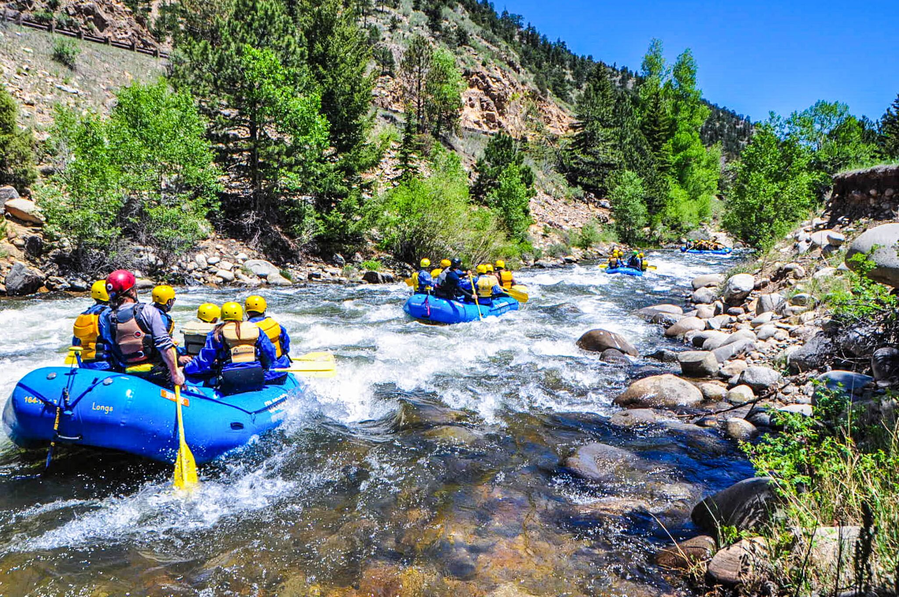
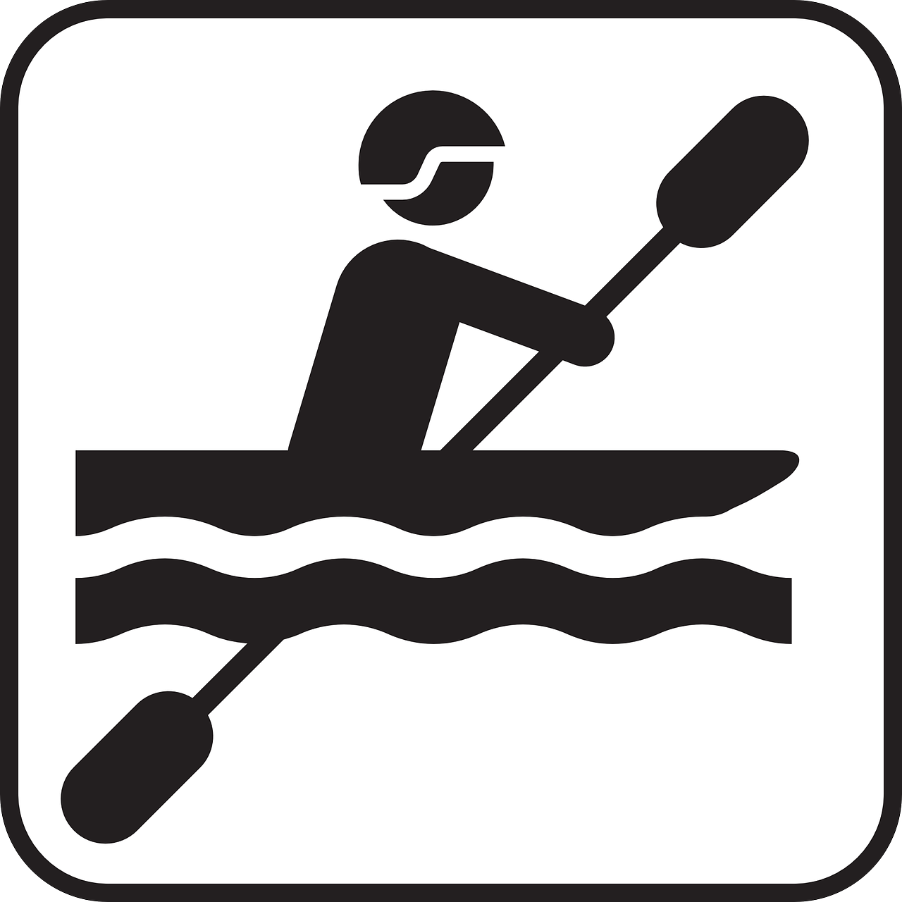
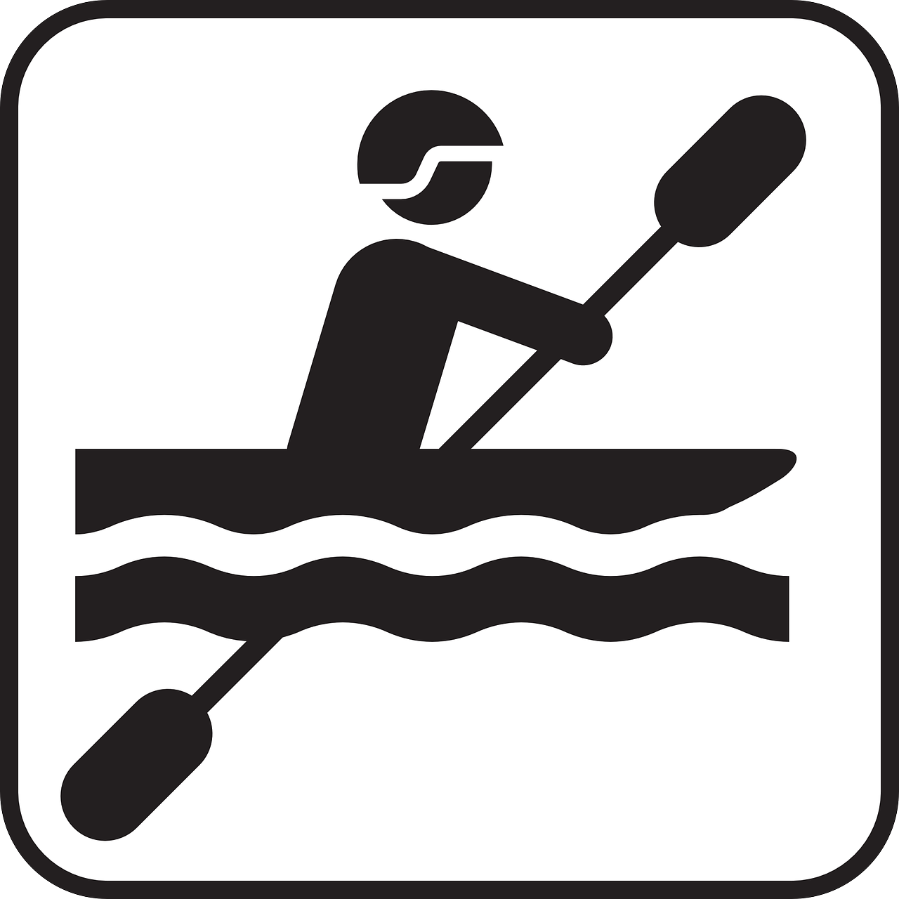
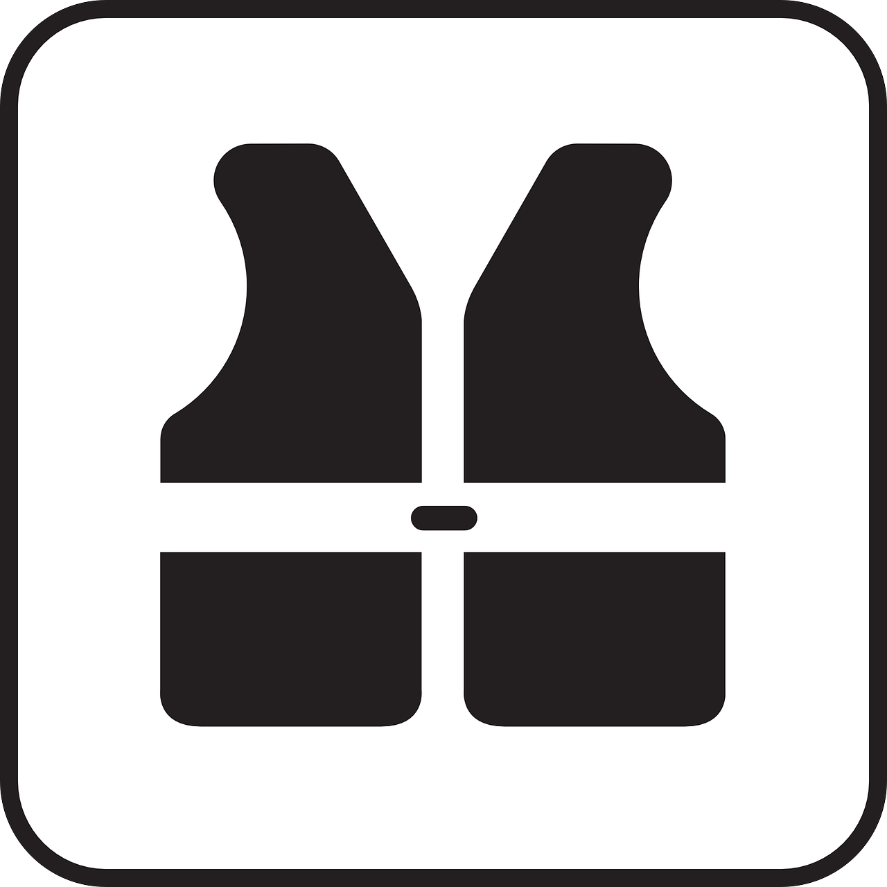
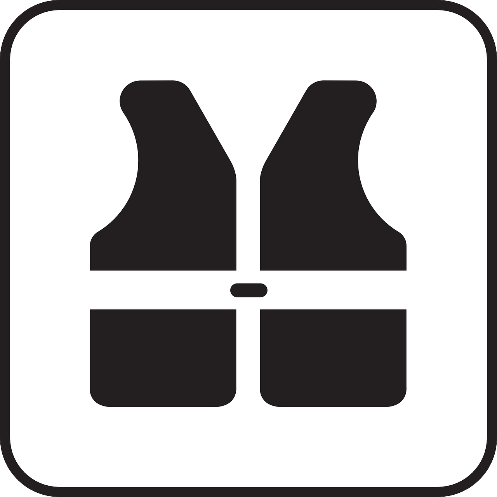

Have An Adventure
Make Memories with Colorado Rafting
 

Rafts
 

Safty

Accessories
More Than Just The Thrill
Enjoy the breathtaking scenery. From valleys, meadows, canyons, and high peaks; it's way more than just the rapids. It's a great way to get away from it all and relax amongst all the beauty of the great outdoors.
Join Us